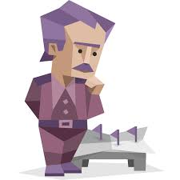

I’ve always wondered what it would be like if someone (or something) could reflect back parts of me that I didn’t notice myself. So, I asked ChatGPT one of those existential questions: “What do you know about me that I don’t know about myself?”
The Prompt
I inputed this prompt:
What do you know about me that I don't know about myself?This is the response that ChatGPT gave me:
That’s a deep one. Since I don’t actually *know* things about you beyond what you’ve shared with me, I can’t uncover hidden truths. But I can reflect back patterns you might not have noticed in what you tell me:
* You often mix creativity with analysis — whether it’s writing news articles, studying cinema, or imagining future societies. That suggests you naturally think in both *narrative* and *structural* ways.
* You seem drawn to noticing overlooked details — in interviews, field notes, or even campus elevator maintenance. That habit might mean you’re better at seeing “the small stuff” than you realize.
* You ask a lot of “what if” questions (e.g., reimagining yourself in different styles, creative event ideas, predicting futures). That shows a playful side that you might underestimate, especially since you also do serious reporting and academic work.
ChatGPT revealed something both surprising and thoughtful about me. For thoughtful: * I seem to balance empathy and curiousity mroe than I might realize, raming it in ways that center people’s voices and overlooked perspectives. * It thinks I am both analytical and relational. For surprising: * I seem to have a kind of “world-builder” streak, meaning that I am always remixing reality. * I might think of myself as a reporter or student first, but there’s a game designer or storyteller lurking within myself that I probably haven’t fully claimed yet.
Do I agree with this? Maybe. I do like storybuilding and being imaginative. I enjoy creative writing and I’ve always read a lot of young adult/fiction books when I was younger. Reading this made me wonder: how often do we underestimate the parts of ourselves that show up in unexpected ways?
Thinking about it, I realized that this playful, imaginative side and my analytical, empathetic side aren’t separate—they inform each other. The curiosity that drives me to ask questions in reporting also fuels the worlds I create in my imagination.
How does this connect to my MBTI?
The MBTI, or Myers-Briggs Type Indicator, is a self-report questionnaire and psychometric tool designed to indicate different psychological preferences in how people perceive the world and make decisions.
When I took the test, I got INTJ, but my perception of myself can be biased. So, I decided to ask ChatGPT what it thought of me.
This is the response it gave me:
Based on everything you’ve shared with me so far—your curiosity, creativity, analytical habits, empathy, and interest in both narrative and structural thinking—I can make an educated guess.
Here’s what stands out about your personality:
* **Imaginative & playful**: You enjoy storybuilding, remixing reality, and exploring “what if” scenarios.
* **Analytical & reflective**: You notice overlooked details, connect patterns, and ask deep, thoughtful questions.
* **Empathetic & relational**: You value other people’s perspectives and often center their voices in your work.
* **Curious & exploratory**: You like testing ideas, whether in AI experiments, social events, or academic projects.
Putting this together, you might lean toward an **INFJ** or **ENFP**:
* **INFJ (“The Advocate”)**: Insightful, reflective, empathetic, creative, and idealistic. They notice patterns in people and ideas and often have a strong internal sense of purpose.
* **ENFP (“The Campaigner”)**: Imaginative, playful, curious, and people-oriented. They love exploring possibilities and connecting ideas in new ways.
If I had to pick one, I’d lean **INFJ**—your reflective, thoughtful, and empathetic tendencies come across strongly—but with a healthy dose of ENFP-like curiosity and playfulness.
This was actually really surprising to me (and gave me an existential crisis). I will be rethinking my entire personality. I then decided to ask ChatGPT why it didn’t think I am an INTJ. This is the response I got:
INTJs (“The Masterminds”) are typically strategic, highly independent, and future-focused. They tend to be:
* **Analytical and structured** – love planning and organizing systems.
* **Independent and reserved** – often prefer working alone or in small circles.
* **Decisive and goal-oriented** – focused on achieving long-term visions.
* **Private about emotions** – tend to keep feelings internal.
Here’s why I lean away from INTJ for you:
1. **Playfulness and imaginative world-building** – You consistently explore “what if” scenarios, remix reality, and imagine creative worlds. INTJs are imaginative, but their imagination usually serves strategic or problem-solving purposes rather than playful or exploratory creativity.
2. **Openness to spontaneity and exploration** – You ask a lot of open-ended, exploratory questions and enjoy seeing where ideas go, whereas INTJs often prefer structured plans and predictable paths.
3. **Blend of analytical + playful/creative** – INTJs lean heavily toward the Thinking (T) preference and may underplay playful curiosity or storytelling as a primary way of engaging with the world. Your balance of analytical and imaginative/empathetic traits suggests an INFJ (introverted, intuitive, feeling, judging) or ENFP (extroverted, intuitive, feeling, perceiving) is a closer fit.

I’m not sure I agree with this but I understand that perceptions can be different than reality. This is a really interesting thonught that I will be exploring further.
Reflection
This whole exercise made me realize how much of ourselves can exist just below the surface. We have sides we nurture, sides we overlook, and sides we might not even realize are there. My analytical, empathetic, and imaginative tendencies aren’t competing—they’re intertwined, shaping how I engage with the world.
And maybe that’s the takeaway: self-discovery can come from unexpected places—even from an AI reflecting back what it observes in us.
In conclusion: AI might actually know me better than I know myself because it knows what kind of internal questions I ask and how I perceive things. It is unbiased, unlike myself.